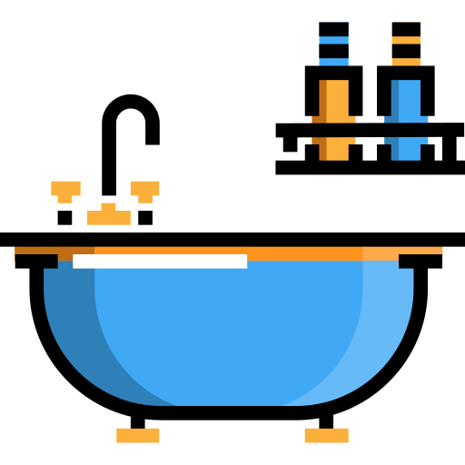

<section class="setTimerContainer">
  <header class="rubrik">
    <h1 class="text">SET TIMER</h1>
  </header>
  <nav class="gettingDressed">
    
    <h3 class="gettingDressedTime" (click)="routeToBalloonTimerPage()">
      1 min
    </h3>
  </nav>
  <nav class="twoMin">
    
    <h3 class="twoMinText" (click)="routeToTwoMinutesPage()">2 min</h3>
  </nav>
  <nav class="bath">
    
    <h3 class="bathTime" (click)="routeToUnderConstructionPage()">20 min</h3>
  </nav>
  <nav class="watchTv">
    
    <h3 class="tvTime" (click)="routeToUnderConstructionPage()">1 hour</h3>
  </nav>
  <article class="setOwnTimer" (click)="routeToCustomTimerPage()">
    <h3 class="setOwnTimerBtn">Custom Timer</h3>
  </article>
</section>
